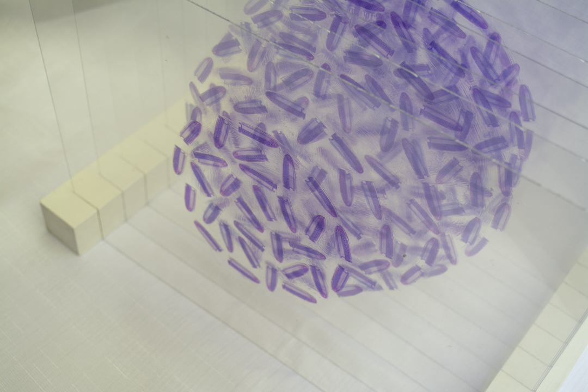
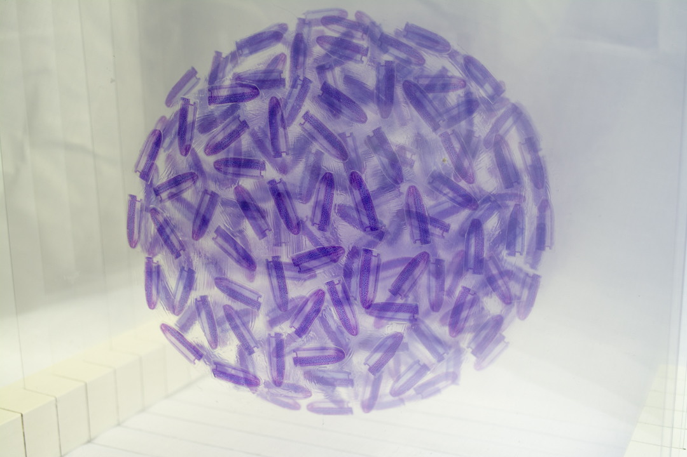
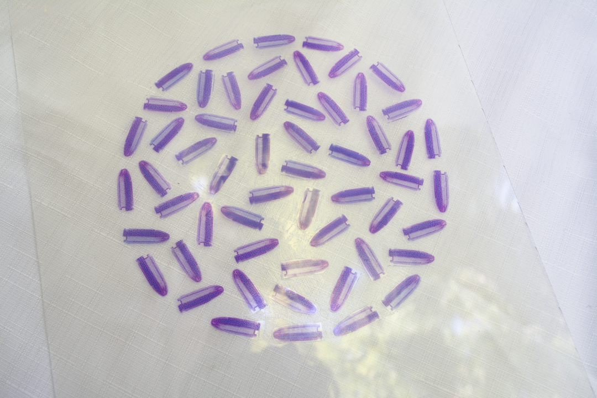

408 (2019)
Plexiglass, wood, inkjet print

Keywords
Gun control / Mass Shooting / Allium / Memorial
About
This is a memorial piece for the people who have passed away because of mass shootings in the US.
The title “408” means the number of deaths so far in 2019 (January to November 14th). The number of purple bullets corresponds to the number “408.”
When Tamaki decided to go to the US, the biggest concern her friends and family had was guns.
She came to the United States in July in 2017, and after a few months, there was a big mass shooting in Las Vegas with a numerous number of victims.
It has been two years since that, but more and more people have become the victim of mass shooting.
I wonder why it is so difficult to ban guns.
The sphere created with 9 sheet collages of purple bullets is designed to create “allium”, which has another name “onion flower.”
She picked up allium as the main subject of this piece because its flower language in Japanese is deep sorrow while in English means prosperity.
She created the piece about the issue of gun control with a perspective from here and Japan.
There is the description in Bill of Rights:
“A well-regulated Militia, being necessary to the security of a free State, the right of the people to keep and bear Arms, shall not be infringed.”
This is the basic law that does not allow gun control. I wonder the government, society, or companies consider guns as the symbols of America’s or their prosperity,
not the harmful weapon that takes away a lot of people’s life at a moment.
-

-

-

-